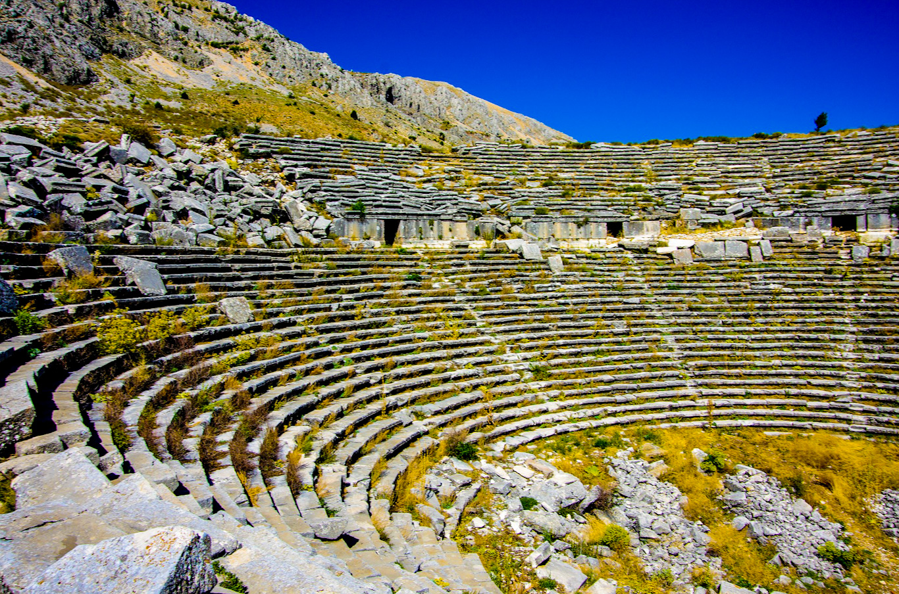

Mirasımız
Sagalasos Antik Kenti
Sagalassos: Pisidia'nın Muhteşem Antik Kenti Isparta'nın Ağlasun ilçesinde bulunan Sagalassos Antik Kenti, Pisidia Bölgesi'nin en önemli şehirlerinden biriydi. MÖ 2. yüzyıldan MS 7. yüzyıla kadar uzanan bir süre boyunca önemli bir ticaret ve kültür merkezi olan Sagalassos, günümüzde Türkiye'nin en önemli antik kentlerinden biri olarak kabul edilmektedir. Sagalassos'ta agora, tiyatro, stadyum, hamamlar, tapınaklar ve evler gibi birçok tarihi yapı bulunmaktadır. Kentin en dikkat çekici yapılarından biri olan tiyatro, 20.000 kişilik kapasitesi ile Anadolu'nun en büyük tiyatrolarından biridir. Sagalassos'un agorası da oldukça geniş ve gösterişlidir. Kentte ayrıca Roma Hamamları, Apollon Tapınağı ve Artemis Tapınağı gibi birçok önemli yapı da yer almaktadır. Sagalassos, sadece tarihi yapıları ile değil, doğal güzelliği ile de dikkat çekmektedir. Kent, Toros Dağları'nın eteklerinde, Aksu Çayı'nın kenarında yer almaktadır. Sagalassos'tan Toros Dağları'nın muhteşem manzarasını seyretmek mümkündür. Sagalassos, UNESCO Dünya Mirası Geçici Listesi'nde de yer almaktadır. Kent, her yıl binlerce yerli ve yabancı turist tarafından ziyaret edilmektedir. Sagalassos'a Nasıl Gidilir? Sagalassos'a Isparta şehir merkezinden otobüs veya minibüs ile yaklaşık 1 saatte ulaşmak mümkündür. Kentte ayrıca araba kiralama hizmeti de mevcuttur. Sagalassos'ta Ne Yapılır? Sagalassos'ta tarihi yapıları gezebilir, Toros Dağları'nın manzarasının tadını çıkarabilir, piknik yapabilir ve doğa yürüyüşlerine çıkabilirsiniz. Kentte ayrıca müze ve hediyelik eşya dükkanları da bulunmaktadır. Sagalassos'a Ne Zaman Gidilir? Sagalassos'u ziyaret etmek için en ideal zaman ilkbahar ve sonbahardır. Yaz aylarında hava oldukça sıcak ve kurak olabilir. Kış aylarında ise kar yağışı nedeniyle bazı yollar kapalı olabilir. Sagalassos, tarihi ve doğal güzellikleri ile Türkiye'nin en önemli turistik destinasyonlarından biridir. Isparta'ya seyahat eden herkesin Sagalassos'u ziyaret etmesini tavsiye ederiz.